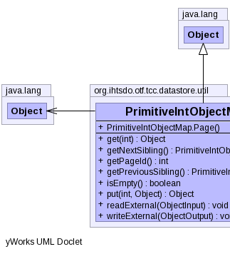
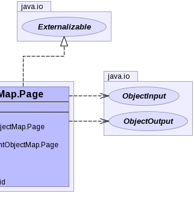

public static class PrimitiveIntObjectMap.Page extends Object implements Externalizable
|  |  |
| Constructor and Description |
|---|
PrimitiveIntObjectMap.Page() |
| Modifier and Type | Method and Description |
|---|---|
Object |
get(int key) |
PrimitiveIntObjectMap.Page |
getNextSibling() |
int |
getPageId() |
PrimitiveIntObjectMap.Page |
getPreviousSibling() |
boolean |
isEmpty() |
Object |
put(int key,
Object newValue) |
void |
readExternal(ObjectInput in) |
void |
writeExternal(ObjectOutput out) |
public void readExternal(ObjectInput in) throws IOException, ClassNotFoundException
readExternal in interface ExternalizableIOExceptionClassNotFoundExceptionpublic void writeExternal(ObjectOutput out) throws IOException
writeExternal in interface ExternalizableIOExceptionpublic int getPageId()
public PrimitiveIntObjectMap.Page getNextSibling()
public PrimitiveIntObjectMap.Page getPreviousSibling()
public Object get(int key)
public boolean isEmpty()
Copyright © 2013 International Health Terminology Standards Development Organisation. All rights reserved.